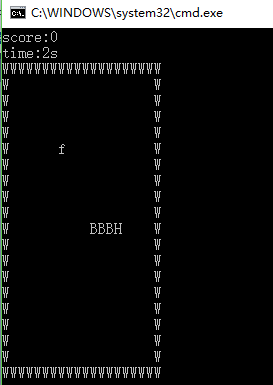

显示方式：清屏打印二位数组，数组即游戏地图，包括墙面（用‘W’表示），蛇（‘H’表蛇头，‘B’表身体）和食物（用‘f’表示）。

const int MaxMap = 20;
char map[MaxMap][MaxMap];边缘为墙面：
for (int i = 0; i < MaxMap; i++){ map[0][i] = 'W'; map[MaxMap - 1][i] = 'W'; } for (int i = 1; i < MaxMap-1; i++){ map[i][0] = 'W'; map[i][MaxMap - 1] = 'W'; }
蛇的身体用结构体连接：
struct snake{
int x;
int y;
struct snake *next;
}head,body1,body2,tail;初始蛇长为4，head表示蛇头，其next指向NULL；tail表示蛇尾，进食后增加的身体加到tail之前。
int centerpoint = MaxMap / 2; head = { centerpoint, centerpoint, NULL }; body1 = { centerpoint, centerpoint-1, &head }; body2 = { centerpoint, centerpoint - 2, &body1 }; tail = { centerpoint, centerpoint - 3, &body2 }; struct snake *p = &tail; while (p != NULL){ map[p->x][p->y] = 'B'; p = p->next; } map[head.x][head.y] = 'H';
引入一个随机种子，生成食物：
void food(){
int x = 0, y = 0;
srand(time(0));
while (map[x][y]!=' '){
x = rand() % (MaxMap - 1) + 1;
y = rand() % (MaxMap - 1) + 1;
}
map[x][y] = 'f';
return;
}蛇的移动：
首先定义蛇的默认移动方向，这里默认为右（WSAD）。
char direction = 'd';接收键盘输入的移动方向，并将其替换为默认方向；如果键盘未输入，则为默认方向。
（蛇不能向身体方向移动，此方向无效。）
（nextX，nextY表示蛇头下一个位置与此时的相对位置。）
计算蛇头应出现的下一个位置。蛇的身体跟随移动，清除原蛇尾。
char letter = direction; struct snake *p = &tail; int nextX = 0, nextY = 0, tailX = p->x, tailY = p->y; if (_kbhit()){ letter = _getch(); if (letter == 'w' || letter == 's' || letter == 'a' || letter == 'd'){ if (0 != (direction - letter)){ if (!((letter == 'w' && direction == 's') || (letter == 's' && direction == 'w') || (letter == 'a' && direction == 'd') || (letter == 'd' && direction == 'a'))) direction = letter; } } } switch (direction){ case 'w': nextX = -1; nextY = 0; break; case 's': nextX = 1; nextY = 0; break; case 'a': nextX = 0; nextY = -1; break; case 'd': nextX = 0; nextY = 1; break; default: break; } map[p->x][p->y] = ' ';
蛇身的移动，蛇头位置的计算
while (p->next != NULL){ p->x = p->next->x; p->y = p->next->y; map[p->x][p->y] = 'B'; p = p->next; } map[head.x][head.y] = 'B'; head.x += nextX; head.y += nextY;
吃食和游戏结束判定：
蛇头出现的下一个位置如果为墙面或自己的身体，游戏结束。
bool gameover(int x,int y){
if (map[x][y] == 'W' || map[x][y] == 'B')
return 1;
else
return 0;
}蛇头出现的下一个位置如果有食物，蛇长加1。
bool eat(int x,int y){
if (map[x][y] == 'f'){
food();
return 1;
}
else{
return 0;
}
}进食后，new一个新身体：
if (eat(head.x, head.y)){
snake *newBody = new snake;
newBody->x = tail.x; newBody->y = tail.y; newBody->next = tail.next;
tail.x = tailX, tail.y = tailY;
tail.next = newBody;
map[tailX][tailY] = 'B';
snakeLength++;
}
map[head.x][head.y] = 'H';
显示：
循环执行蛇的移动过程，并清屏打印地图。
完整代码：https://github.com/shuiguai/games/blob/master/snake.cpp
环境：win64，VS2010